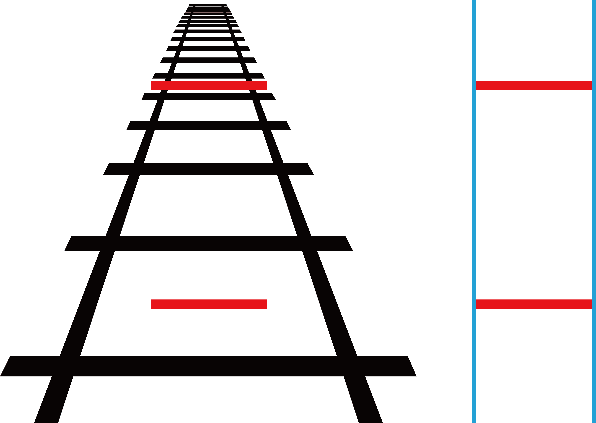

폰조 착시(Ponzo Illusion)는 1911년 이탈리아의 심리학자 마리오 폰조(Mario Ponzo)가 처음 기록한 착시 현상이다. 수렴하는 두 선 사이에 실제로 같은 길이의 가로선 두 개를 놓으면, 소실점에 가까운 위쪽 선이 더 길어 보인다.
원인은 뇌의 원근감 해석 방식에 있다. 수렴하는 두 선은 멀리 뻗어 나가는 길이나 철로처럼 읽힌다. 뇌는 같은 크기의 물체라도 멀리 있으면 실제로 더 크다고 자동으로 보정하는데, 이 보정 메커니즘이 평면 이미지에도 그대로 작동하면서 착시가 발생한다.
이것을 "크기 항상성(Size Constancy)"이라고 한다. 뇌는 망막에 맺히는 상의 크기가 아니라, 거리를 고려한 실제 크기를 추정하려 한다. 3차원 세계에서 생존하기 위해 발달한 이 능력이 2차원 평면에서 오작동을 일으키는 것이다.
폰조 착시는 일상에서 끊임없이 작동한다. 지평선 근처의 달이 하늘 높이 뜬 달보다 커 보이는 것, 고속도로에서 멀리 있는 차가 실제보다 작아 보이는 것 모두 같은 원리다. 우리가 보는 세계는 망막의 기록이 아니라, 뇌가 재구성한 3차원 모델이다.